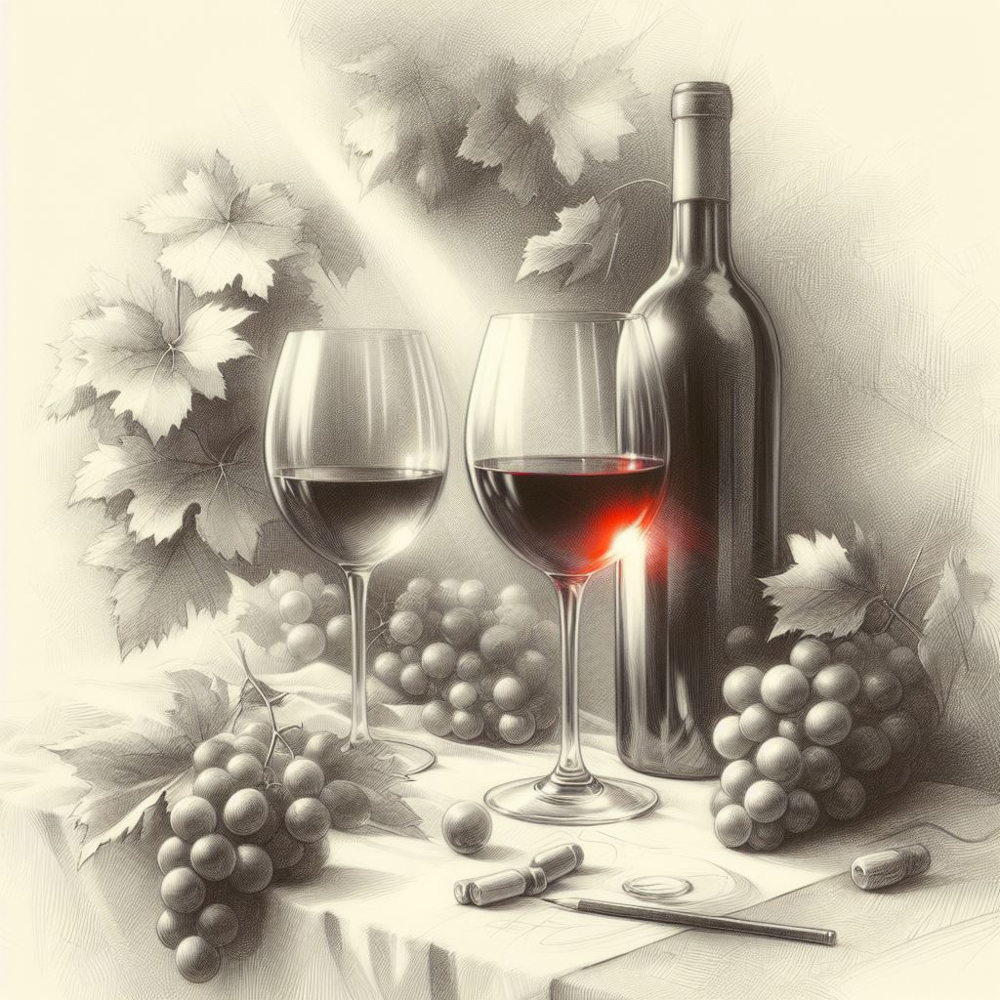

¡Bienvenidos a "Media Noche"! Sumérgete en el encanto y la elegancia de nuestro oasis vinícola, donde cada botella cuenta una historia y cada sorbo es una aventura sensorial. En el corazón de la ciudad, nuestra vinoteca se erige como un santuario para los amantes del vino, ofreciendo una cuidadosa selección de etiquetas de todo el mundo, acompañada de una experiencia de servicio incomparable. Descubre un mundo de sabores, cultura y camaradería en "Media Noche", donde el vino se convierte en una celebración de la vida misma. ¡Explora, disfruta y déjate llevar por el fascinante universo del vino con nosotros!
ExplorarEn "Media Noche", nos enorgullecemos de ofrecer una experiencia vinícola única que combina la pasión por el vino con la excelencia en el servicio. Fundada con el objetivo de ser más que una simple tienda de vinos, nuestra vinoteca se ha convertido en un destino para los amantes del vino que buscan explorar y descubrir nuevas joyas enológicas. Desde nuestros inicios, hemos dedicado nuestra energía a seleccionar cuidadosamente una amplia gama de vinos que reflejen la diversidad y la calidad del panorama vitivinícola global.
Nuestra misión es ofrecer a nuestros clientes una experiencia única y memorable cada vez que nos visiten. Más allá de simplemente vender vinos, nos esforzamos por educar, inspirar y sorprender a quienes cruzan nuestras puertas. Nuestro equipo está compuesto por apasionados expertos enólogos y sommeliers que están siempre dispuestos a compartir su conocimiento y recomendar el vino perfecto para cada ocasión. No solo vendemos vinos, sino que también cultivamos relaciones duraderas con nuestros clientes, basadas en la confianza, la honestidad y el amor por el vino.
Creemos que el vino es mucho más que una bebida; es un vehículo para la conexión, la celebración y la creatividad. Por eso, nos esforzamos por crear un ambiente acogedor y relajado donde los amantes del vino puedan reunirse, compartir historias y descubrir nuevas pasiones en común. Desde nuestras catas de vinos exclusivas hasta nuestros eventos temáticos, cada experiencia está diseñada para inspirar y deleitar a nuestros clientes, invitándolos a sumergirse en el fascinante mundo del vino
Además de ser una vinoteca, nos consideramos embajadores de la cultura del vino, comprometidos a promover el consumo responsable y sostenible de esta preciada bebida. Nos asociamos con productores que comparten nuestros valores de calidad, autenticidad y respeto por el medio ambiente, asegurándonos de que cada botella que llega a nuestras estanterías cuente una historia de artesanía y dedicación. No solo nos preocupamos por ofrecer vinos excepcionales, sino que también nos esforzamos por contribuir positivamente a la comunidad y al mundo que nos rodea.
En resumen, "Media Noche" es mucho más que una vinoteca; es un lugar donde el vino se convierte en una experiencia, donde la pasión se encuentra con la excelencia y donde cada cliente es recibido con una sonrisa y un brindis. Únete a nosotros en nuestro viaje por el apasionante mundo del vino y descubre todo lo que "Media Noche" tiene para ofrecer. ¡Salud!


Descubre nuestra vinoteca en el corazón de la ciudad, donde cada botella cuenta una historia. Déjate guiar por nuestro equipo de expertos y encuentra el vino perfecto para ti. Ven a disfrutar de catas y eventos especiales en un ambiente acogedor y único. ¡Te esperamos con una copa lista para brindar juntos en "Media Noche"!"